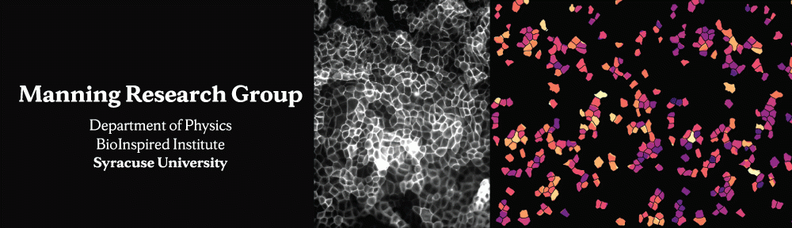
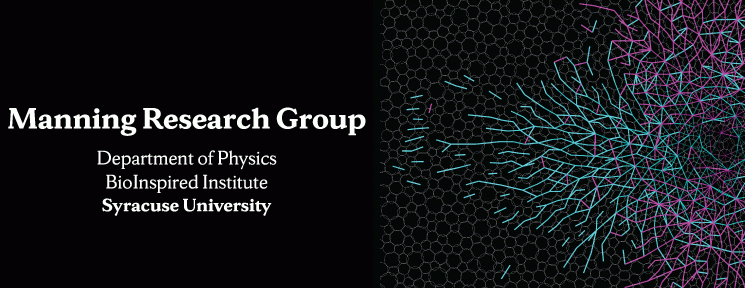
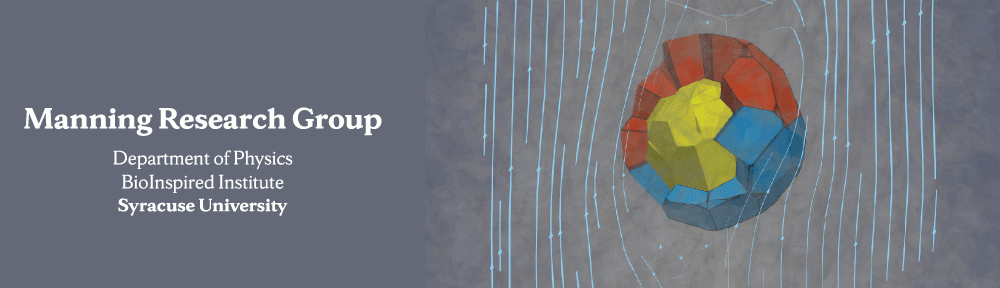

Welcome!



The Manning research group studies the collective behavior of group of cells in biological tissues as well as deformation and failure in disordered solids ranging from glasses to granular materials. We use computational and theoretical techniques and extend tools from statistical and soft matter physics to understand and predict emergent phenomena in these far from equilibrium systems, and work closely with experimentalists and scientists around the globe.
Please see the Research section for collaborations and more details.
Contact Information
Mailing address:
Office 201 Physics Bldg
Department of Physics
Syracuse University
Syracuse, NY 13244 USA
Phone: 315.443.3920
Fax: 315.443.9103
Email: mmanning@syr.edu
The Manning Research group is affiliated with BioInspired Syracuse: Institute for Material and Living Systems.
Group News
Loading recent posts…